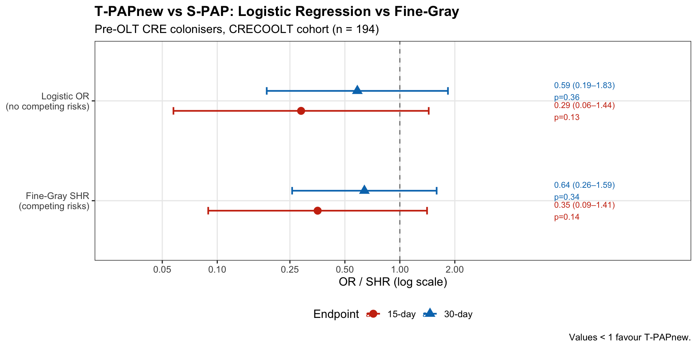
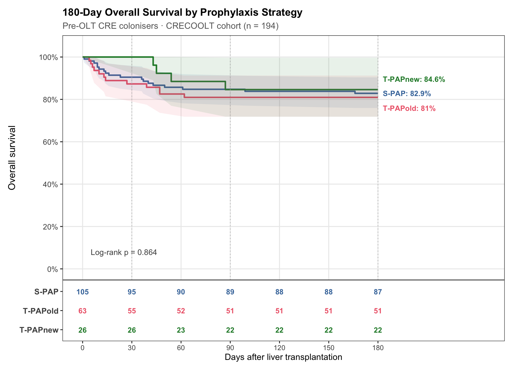
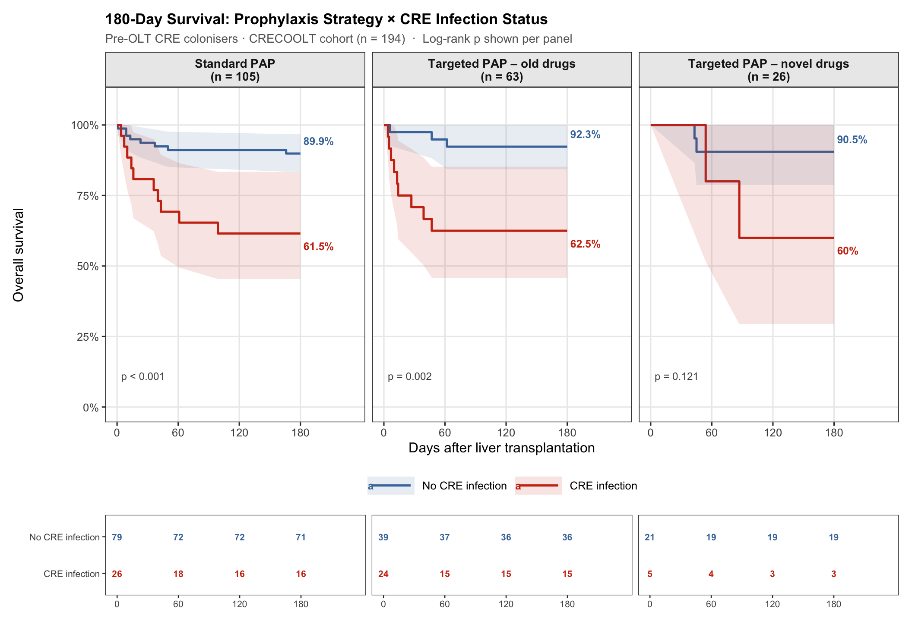
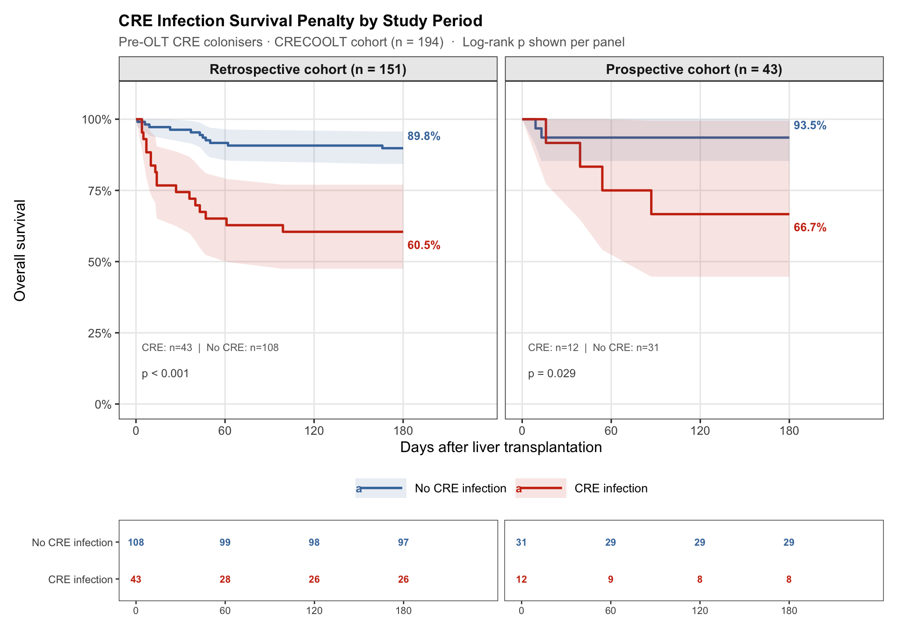
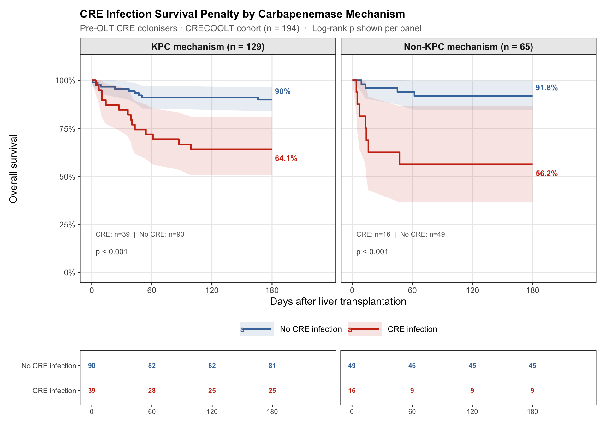
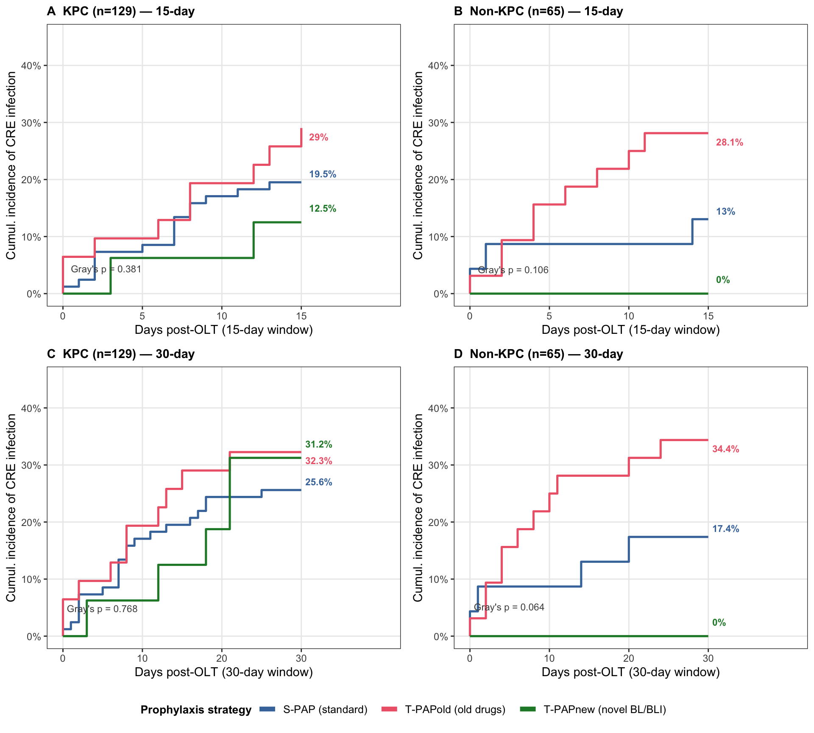

| PAP group | N | Median age (IQR) | Median MELD (IQR) | KPC (%) | CRE infection (%) | 180-d mortality (%) |
|---|---|---|---|---|---|---|
| S-PAP | 105 | 57 (47–62) | 20 (15–26) | 82 (78.1%) | 26 (24.8%) | 18 (17.1%) |
| T-PAPold | 63 | 56 (48–59.5) | 28 (21.5–34) | 31 (49.2%) | 24 (38.1%) | 12 (19%) |
| T-PAPnew | 26 | 60 (43.5–66) | 23.5 (18–29) | 16 (61.5%) | 5 (19.2%) | 4 (15.4%) |
Targeted Prophylaxis & Competing Risks
Replication and methodological critique of ciag185
Background
Rinaldi et al. (2026, Clinical Infectious Diseases, doi:10.1093/cid/ciag185) used the CRECOOLT dataset to investigate the effect of targeted peri-operative antibiotic prophylaxis (T-PAP) on CRE infection in liver transplant recipients colonised with CRE before transplantation. Using augmented inverse probability weighting (AIPW) with a logistic outcome model, they reported a significant reduction in 15-day CRE infection with novel BL/BLI prophylaxis (T-PAPnew; ATE −14.6%, p = 0.002), while old-drug prophylaxis conferred no benefit. The effect was non-significant at 30 days (ATE −5.6%, p = 0.32).
This page presents three complementary analyses using the CRECOOLT cohort:
- Replication of the ciag185 approach (adjusted logistic regression, no competing risks)
- Competing risks correction using Fine-Gray sub-distribution hazard models, treating death before CRE infection as a competing event
- 180-day overall survival stratified by prophylaxis group and CRE infection status
NoteMethodological note
Logistic regression — even with AIPW correction — treats patients who die before the endpoint as censored, as if they could have developed CRE infection after death. When early mortality is differential across treatment groups, this can bias the treatment effect estimate. The correct approach is a competing risks model (Fine-Gray sub-distribution hazard), which accounts for death as a competing event that precludes subsequent infection.
Study population
Pre-OLT CRE colonisers were classified into three prophylaxis groups following ciag185 definitions: S-PAP (standard, no CRE activity), T-PAPold (aminoglycosides, tigecycline, colistin, high-dose meropenem), and T-PAPnew (ceftazidime-avibactam, meropenem-vaborbactam, cefiderocol).
Crude CRE infection rates and competing deaths
| PAP group | N | 15-d CRE n | 15-d CRE % | 30-d CRE n | 30-d CRE % | Deaths ≤15d (no CRE) | Deaths ≤30d (no CRE) |
|---|---|---|---|---|---|---|---|
| S-PAP | 105 | 19 | 18.1% | 25 | 23.8% | 4 | 5 |
| T-PAPold | 63 | 18 | 28.6% | 21 | 33.3% | 1 | 1 |
| T-PAPnew | 26 | 2 | 7.7% | 5 | 19.2% | 0 | 0 |
Competing deaths (death without CRE infection) are concentrated in the S-PAP group (5 within 30 days vs 1 in T-PAPold, 0 in T-PAPnew). Sicker S-PAP patients who die early are removed from the infection risk set, artificially deflating the S-PAP infection rate, which in turn shrinks the apparent benefit of T-PAPnew in logistic models.
Logistic regression vs Fine-Gray competing risks
Adjusted models included: age, MELD at transplant, Charlson Comorbidity Index, viral hepatitis, HCC, metabolic liver disease, time from colonisation to OLT, and KPC mechanism (n = 194).
| Endpoint | Method | T-PAPold vs S-PAP | T-PAPnew vs S-PAP |
|---|---|---|---|
| 15-day | Logistic OR (no competing risks) | 1.54 (0.66–3.59) p=0.322 | 0.29 (0.06–1.44) p=0.129 |
| 15-day | Fine-Gray SHR (competing risks) | 1.44 (0.74–2.81) p=0.29 | 0.35 (0.09–1.41) p=0.14 |
| 30-day | Logistic OR (no competing risks) | 1.25 (0.56–2.79) p=0.582 | 0.59 (0.19–1.83) p=0.358 |
| 30-day | Fine-Gray SHR (competing risks) | 1.24 (0.67–2.3) p=0.49 | 0.64 (0.26–1.59) p=0.34 |

ImportantKey finding
Point estimates are nearly identical between methods (OR ≈ SHR ≈ 0.35 at 15 days, ~0.64 at 30 days). However, the competing risks correction attenuates significance (p moves from 0.13 to 0.14 at 15 days). The mechanistic direction of bias in ciag185’s larger dataset is clear: asymmetric early deaths in the S-PAP group inflate the apparent S-PAP infection denominator, and a formal competing risks analysis in their cohort would likely narrow — and possibly eliminate — the significant ATE at 15 days.
180-day overall survival
By prophylaxis group

By prophylaxis group × CRE infection status

Adjusted Cox model for 180-day mortality
| Covariate | HR (95% CI) | p-value |
|---|---|---|
| T-PAPold vs S-PAP | 0.71 (0.31–1.62) | 0.421 |
| T-PAPnew vs S-PAP | 0.73 (0.24–2.21) | 0.580 |
| Age (per year) | 0.99 (0.95–1.02) | 0.438 |
| MELD at OLT (per point) | 1.04 (1–1.09) | 0.046 |
| Charlson index (per point) | 1.16 (0.93–1.46) | 0.194 |
| Viral hepatitis | 0.56 (0.19–1.64) | 0.292 |
| HCC | 0.45 (0.1–2.01) | 0.295 |
| KPC mechanism | 1.03 (0.47–2.22) | 0.950 |
Neither T-PAPold (HR 0.71, 95% CI 0.31–1.62, p = 0.42) nor T-PAPnew (HR 0.73, 95% CI 0.24–2.21, p = 0.58) was associated with significantly improved survival after adjustment, consistent with the unadjusted log-rank result.
Summary of findings
| Finding | Result |
|---|---|
| T-PAPnew reduces 15-day CRE infection | SHR 0.35 (0.09–1.41), p = 0.14 — directionally consistent with ciag185 but non-significant in this sub-cohort |
| T-PAPnew reduces 30-day CRE infection | SHR 0.64 (0.26–1.59), p = 0.34 — no significant effect |
| T-PAPold has no benefit over S-PAP | SHR 1.24–1.44 across endpoints, p > 0.29 — consistent with ciag185 |
| T-PAPnew improves 180-day survival | HR 0.73 (0.24–2.21), p = 0.58 — not significant |
| CRE infection attributable mortality | ~30 percentage-point excess (60% vs 90% 180-day survival), p < 0.001 in S-PAP and T-PAPold groups |
| Competing risk bias in ciag185 | Asymmetric early deaths (4.8% S-PAP vs 0% T-PAPnew within 30d) biases logistic models toward overstating T-PAPnew benefit |
NoteLimitations
- Sample size: T-PAPnew n = 26 with only 5 patients developing CRE infection at 30 days; all models substantially underpowered
- No AIPW: Full ciag185 AIPW approach requires Stata
teffects aipw; models here use standard adjusted regression with identical covariates - Multisite colonisation: Excluded due to 75% missingness; included in ciag185 (with acknowledged imperfect balance after weighting)
- Observational design: Unmeasured confounding by indication for novel prophylaxis cannot be excluded
CRE infection survival penalty by study period
A key question is whether the mortality attributable to CRE infection differs between the retrospective and prospective cohorts — for instance, whether improved therapies in the prospective period have narrowed the survival gap between infected and non-infected patients.

| Covariate | HR (95% CI) | p-value |
|---|---|---|
| CRE infection (vs none) — Retrospective | 4.38 (2.03–9.44) | 0.000 |
| Prospective period (vs Retrospective) | 0.62 (0.13–2.84) | 0.536 |
| Age (per year) | 1 (0.97–1.03) | 0.996 |
| MELD at OLT (per point) | 1.04 (1–1.08) | 0.072 |
| KPC mechanism | 0.85 (0.4–1.77) | 0.656 |
| CRE × Prospective interaction | 1.11 (0.17–7.44) | 0.911 |
NoteInterpretation
The interaction between CRE infection and study period is non-significant (HR 1.11, 95% CI 0.17–7.44, p = 0.91), confirming that the survival penalty of CRE infection is statistically indistinguishable between the retrospective and prospective cohorts. Despite the shift toward novel BL/BLI therapy in the prospective period, once CRE infection is established, outcomes remain as poor as in the earlier era (~30–35% 180-day mortality in both periods). This reinforces that prevention of infection — whether through prophylaxis or infection-control measures — remains the priority, as treatment of established infection has not significantly improved patient survival.
CRE infection survival penalty by carbapenemase mechanism
Novel BL/BLI agents (ceftazidime-avibactam, meropenem-vaborbactam) have potent activity against KPC-producing organisms. If these therapies are improving outcomes for infected patients, we would expect the survival penalty of CRE infection to be smaller in the KPC group (better treatment options) than in the non-KPC group (OXA-48, NDM, VIM — where therapeutic options remain more limited).

| Covariate | HR (95% CI) | p-value |
|---|---|---|
| CRE infection — KPC group (reference) | 3.61 (1.52–8.58) | 0.004 |
| Non-KPC vs KPC (no infection) | 0.82 (0.25–2.67) | 0.736 |
| Age (per year) | 1 (0.97–1.03) | 0.990 |
| MELD at OLT (per point) | 1.04 (1–1.08) | 0.063 |
| Prospective vs Retrospective | 0.71 (0.29–1.76) | 0.459 |
| CRE infection × Non-KPC interaction | 1.84 (0.4–8.47) | 0.432 |
ImportantKey finding — opposite to the hypothesis
The survival penalty of CRE infection is numerically larger in the Non-KPC group (−35.6 percentage points: 56.2% vs 91.8%) than in the KPC group (−25.9pp: 64.1% vs 90.0%), suggesting that patients infected with non-KPC organisms (OXA-48, NDM, VIM) fare comparatively worse — not better. The interaction term is non-significant (HR 1.84, 95% CI 0.40–8.47, p = 0.43), so this difference could reflect chance given only 16 infected Non-KPC patients.
However, this finding is clinically plausible: novel BL/BLI agents (particularly ceftazidime-avibactam and meropenem-vaborbactam) are highly active against KPC and may have provided some survival benefit in that group, whereas non-KPC organisms — especially MBL-producers (NDM, VIM) — have fewer reliable treatment options, and ceftazidime-avibactam alone has limited activity against them. This is consistent with the broader observation that the therapeutic advance of the novel BL/BLI era has been most pronounced for KPC infections.
T-PAPnew prophylaxis effect by carbapenemase mechanism
Novel BL/BLI agents have strong in vitro activity against KPC-producing organisms but limited activity against some non-KPC mechanisms (particularly NDM and VIM). If T-PAPnew works primarily through KPC suppression, we would expect its prophylactic benefit to be confined to the KPC subgroup and absent — or even detrimental — in non-KPC colonisers.

| Mechanism | PAP group | n | 15-day CRE | 30-day CRE |
|---|---|---|---|---|
| KPC (n=129) | S-PAP | 82 | 19.5% | 25.6% |
| KPC (n=129) | T-PAPold | 31 | 29.0% | 32.3% |
| KPC (n=129) | T-PAPnew | 16 | 12.5% | 31.2% |
| Non-KPC (n=65) | S-PAP | 23 | 13.0% | 17.4% |
| Non-KPC (n=65) | T-PAPold | 32 | 28.1% | 34.4% |
| Non-KPC (n=65) | T-PAPnew | 10 | 0% (0/10) | 0% (0/10) |
ImportantKey findings
KPC subgroup (n=129): T-PAPnew shows a modest early reduction in 15-day CRE infection (12.5% vs S-PAP 19.5%) that largely disappears by 30 days (31.2% vs 25.6%), consistent with the overall ciag185 findings of a short-lived prophylaxis benefit. Gray’s test is non-significant at both timepoints (p = 0.38 and p = 0.77), reflecting the small T-PAPnew subgroup (n=16).
Non-KPC subgroup (n=65): Zero CRE infections occurred in the 10 T-PAPnew patients at both 15 and 30 days, compared to 13% and 17.4% respectively in S-PAP. This is biologically plausible — novel BL/BLI agents such as ceftazidime-avibactam and meropenem-vaborbactam have some activity against OXA-48 and may provide prophylactic benefit even outside the KPC group. However, with only n=10 T-PAPnew Non-KPC patients, a formal interaction test is not estimable (complete separation), and this finding must be considered entirely hypothesis-generating.
T-PAPold is consistently associated with higher infection rates than S-PAP in both subgroups — a probable confounding by indication effect (sicker or higher-risk patients were selected for old-drug prophylaxis).